| 1 |
Kyristan "The Dead King" (Lich) | AD&D 2nd Edition |
LENTICULAR MOTION CARD (LEGENDS&LORE2E; SWORDS OF DECEIT) |
Carol Heyer; Keith Parkinson |
| 2 |
Graytch | Dark Sun |
??? |
??? |
| 3 |
Magnus Arifek | Forgotten Realms |
??? |
??? |
| 4 |
Wilhemina the Petite | Spelljammer |
??? |
??? |
| 5 |
Keira Nierna | Forgotten Realms |
??? |
??? |
| 6 |
Kaele Nierna | Forgotten Realms |
??? |
??? |
| 7 |
Daltim Flamefist | Forgotten Realms |
??? |
??? |
| 8 |
Rowan | Dark Sun |
??? |
??? |
| 9 |
Drasna | Dark Sun |
??? |
??? |
| 10 |
Casimir of Harmonia | Ravenloft |
HEART OF MIDNIGHT |
Clyde Caldwell |
| 11 |
Rastibaxas | AD&D 2nd Edition |
DLQ1 KNIGHT'S SWORD |
Robh Ruppel |
| 12 |
Aegis | Dark Sun |
THE VERDANT PASSAGE |
Gerald Brom |
| 13 |
Lord Soth | Ravenloft |
KNIGHT OF THE BLACK ROSE |
Clyde Caldwell |
| 14 |
Ugorth | AD&D 2nd Edition |
WRATH OF THE IMMORTALS |
Jeff Easley |
| 15 |
High Master | Ravenloft |
THOUGHTS OF DARKNESS |
Fred Fields |
| 16 |
Sir Ortemus | AD&D 2nd Edition |
SWORD AND SHIELD (COMPLETE PALADIN'S HANDBOOK INSET) |
Glenn Orbik |
| 17 |
Stantree Vilmrick | Dragonlance |
DLQ1 KNIGHT'S SWORD |
Robh Ruppel |
| 18 |
Jaraq the Deceiver | Ravenloft |
VAN RICHTEN'S GUIDE TO VAMPIRES |
Den Beauvais |
| 19 |
Galek Sandstrider | Dark Sun |
??? |
??? |
| 20 |
Ka'Cha | Dark Sun |
ROAD TO URIK |
Gerald Brom |
| 21 |
Athasian Dragon | Dark Sun |
DRAGON KINGS |
Gerald Brom |
| 22 |
Hornung the Anarch | AD&D 2nd Edition |
??? |
??? |
| 23 |
Lerithyn | Forgotten Realms |
??? |
??? |
| 24 |
Mouse | AD&D 2nd Edition |
??? |
??? |
| 25 |
Loran | Greyhawk |
??? |
??? |
| 26 |
Strom the Purple Wizard | AD&D 2nd Edition |
??? |
??? |
| 27 |
Niche Fireheart | AD&D 2nd Edition |
??? |
??? |
| 28 |
Blur | AD&D 2nd Edition |
SPELL EFFECTS SET FOR RARE CARDS |
Carol Heyer |
| 29 |
Evard's Black Tentacles | AD&D 2nd Edition |
SPELL EFFECTS SET FOR RARE CARDS |
Carol Heyer |
| 30 |
Glitterdust | AD&D 2nd Edition |
SPELL EFFECTS SET FOR RARE CARDS |
Carol Heyer |
| 31 |
Magic Missile | AD&D 2nd Edition |
SPELL EFFECTS SET FOR RARE CARDS |
Carol Heyer |
| 32 |
Melf's Minute Meteors | AD&D 2nd Edition |
SPELL EFFECTS SET FOR RARE CARDS |
Carol Heyer |
| 33 |
Minor Glove of Invulnerability | AD&D 2nd Edition |
SPELL EFFECTS SET FOR RARE CARDS |
Carol Heyer |
| 34 |
Prismatic Spray | AD&D 2nd Edition |
SPELL EFFECTS SET FOR RARE CARDS |
Carol Heyer |
| 35 |
Pyrotechnics | AD&D 2nd Edition |
SPELL EFFECTS SET FOR RARE CARDS |
Carol Heyer |
| 36 |
Spectral Hand | AD&D 2nd Edition |
SPELL EFFECTS SET FOR RARE CARDS |
Carol Heyer |
| 37 |
Eric Blackthorn | AD&D 2nd Edition |
??? |
??? |
| 38 |
Logan Starr | Forgotten Realms |
??? |
??? |
| 39 |
Rashad al-Anwar | Al-Qadim |
??? |
??? |
| 40 |
Icarus | Spelljammer |
??? |
??? |
| 41 |
Borys | Dark Sun |
VALLEY OF DUST AND FIRE |
Gerald Brom |
| 42 |
Lhaeo | Forgotten Realms |
??? |
??? |
| 43 |
Darsson Spellmaker | Forgotten Realms |
RARE CARD |
Carol Heyer* |
| 44 |
Selowen | Dragonlance |
RARE CARD |
Carol Heyer |
| 45 |
Amber | AD&D 2nd Edition |
RARE CARD |
Carol Heyer* |
| 46 |
Create-Your-Own (Warrior) | AD&D 2nd Edition |
THE MILENIAN EMPIRE |
Robh Ruppel |
| 47 |
Create-Your-Own (Warrior) | AD&D 2nd Edition |
FROM THE SHADOWS |
Clyde Caldwell |
| 48 |
Create-Your-Own (Wizard) | AD&D 2nd Edition |
ASTICLIAN GAMBIT |
Gerald Brom |
| 49 |
Create-Your-Own (Wizard) | AD&D 2nd Edition |
FROM THE SHADOWS |
Clyde Caldwell |
| 50 |
Create-Your-Own (Priest) | AD&D 2nd Edition |
THE MILENIAN SCEPTER |
Robh Ruppel |
| 51 |
Create-Your-Own (Priest) | AD&D 2nd Edition |
FORBIDDEN LORE |
Clyde Caldwell |
| 52 |
Create-Your-Own (Rogue) | AD&D 2nd Edition |
DUNGEONS OF MYSTERY |
Jeff Easley |
| 53 |
Create-Your-Own (Rogue) | AD&D 2nd Edition |
DUNGEONS OF MYSTERY |
Jeff Easley |
| 54 |
Create-Your-Own (Psionicist) | AD&D 2nd Edition |
ASTICLIAN GAMBIT |
Gerald Brom |
| 55 |
Miguel Hernando de la Montoya | AD&D 2nd Edition |
RARE CARD |
Carol Heyer |
| 56 |
High Princess Alicia Kendrick | Forgotten Realms |
PROPHET OF MOONSHAE |
Clyde Caldwell |
| 57 |
Prince Brandon Olaffson | Forgotten Realms |
PROPHET OF MOONSHAE |
Clyde Caldwell |
| 58 |
Myrmeen Lhal | Forgotten Realms |
THE NIGHT PARADE |
Fred Fields |
| 59 |
Artus Cimber | Forgotten Realms |
THE RING OF WINTER |
Fred Fields |
| 60 |
Checklist: 1–60 | AD&D 2nd Edition |
IT'S A LOGO |
NOT RELEVANT |


 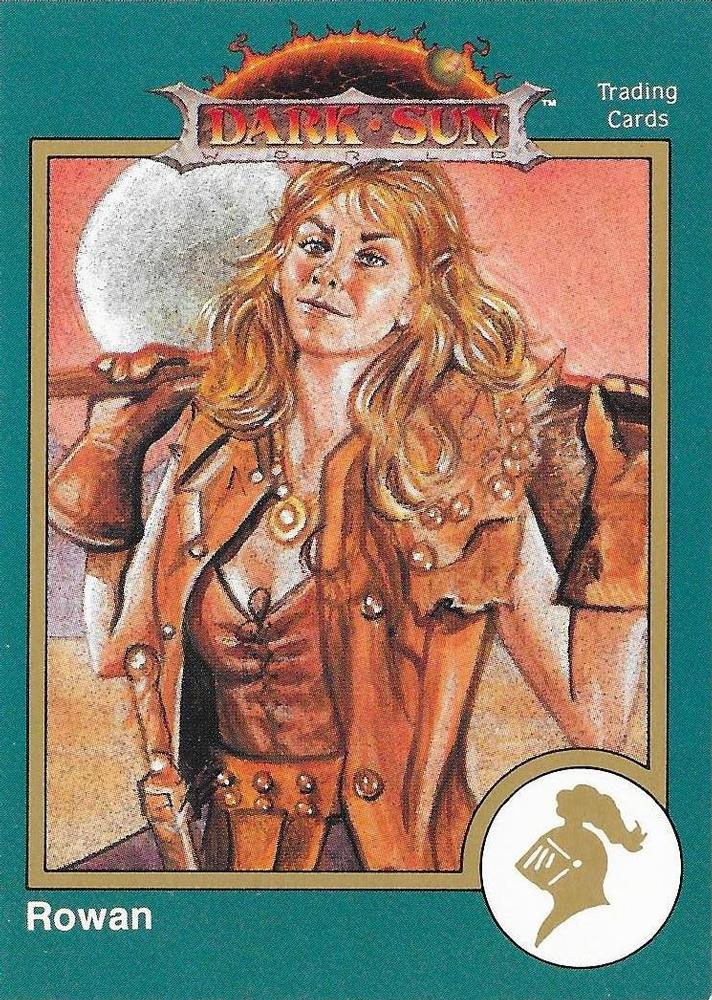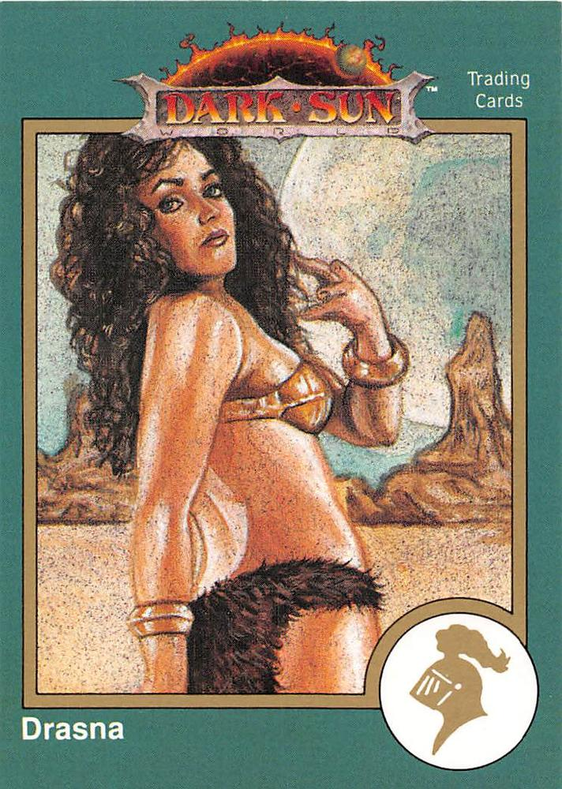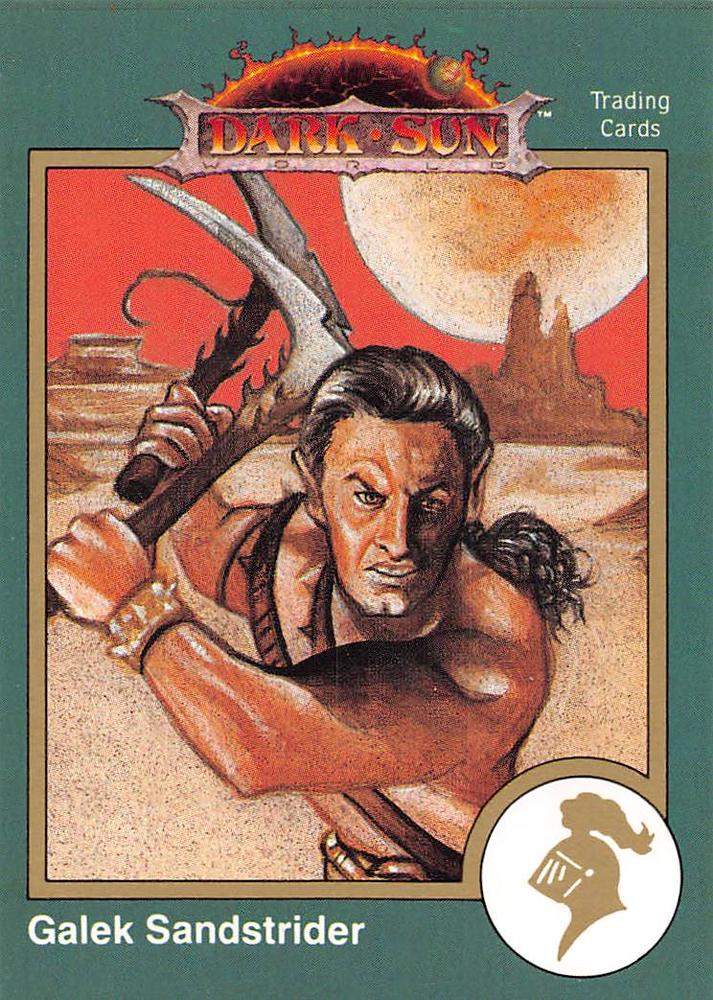
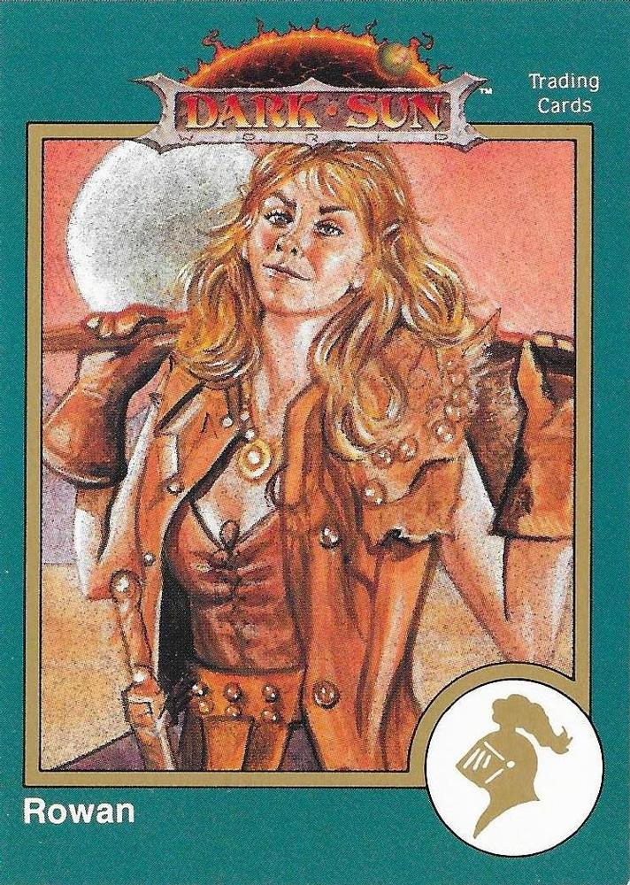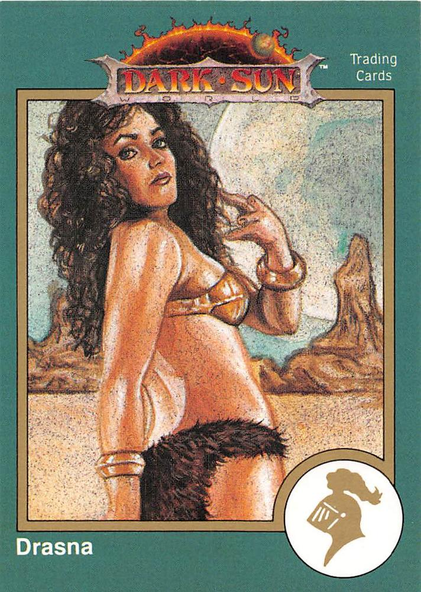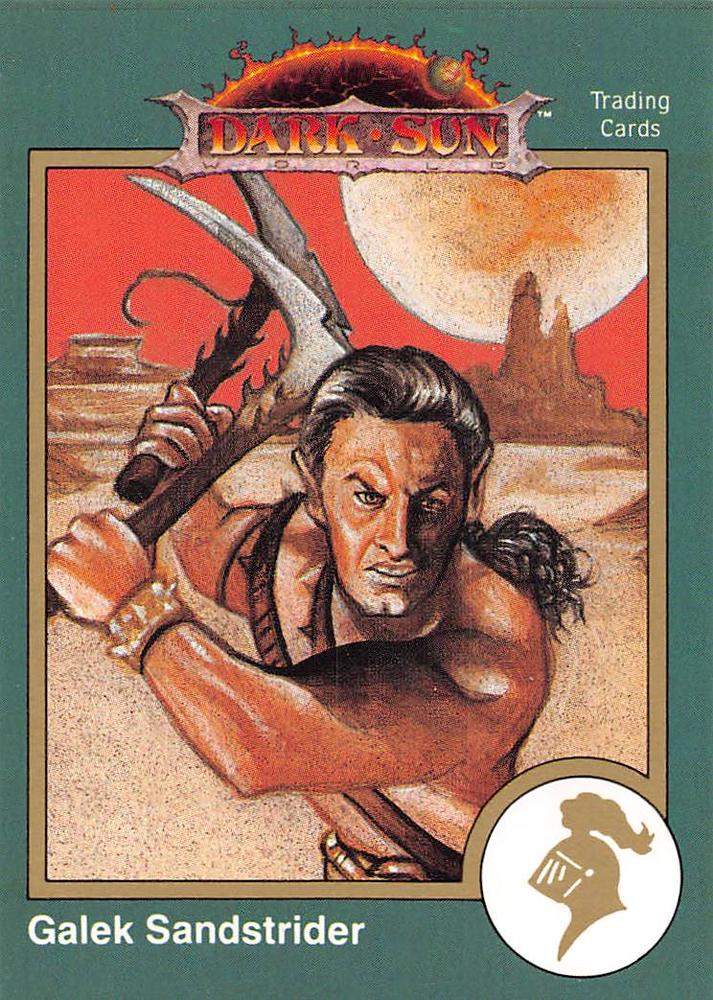
 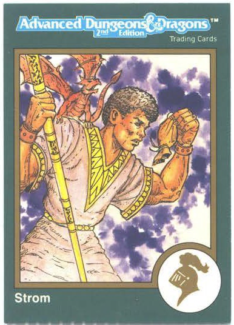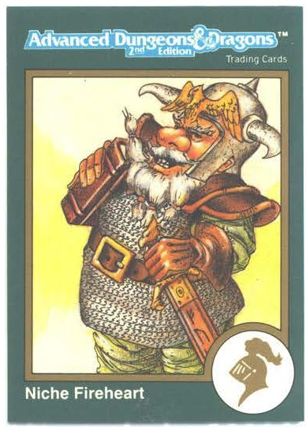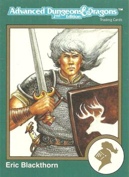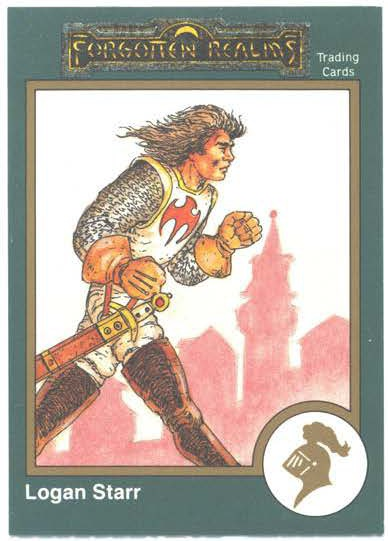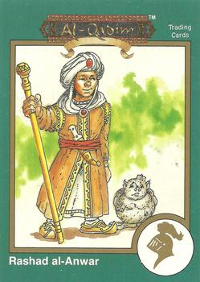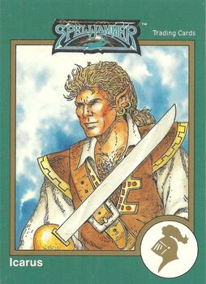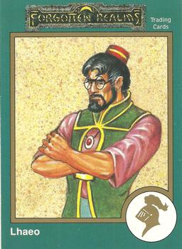
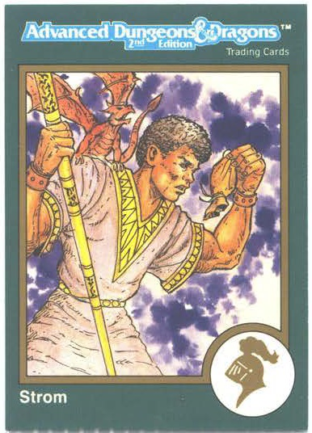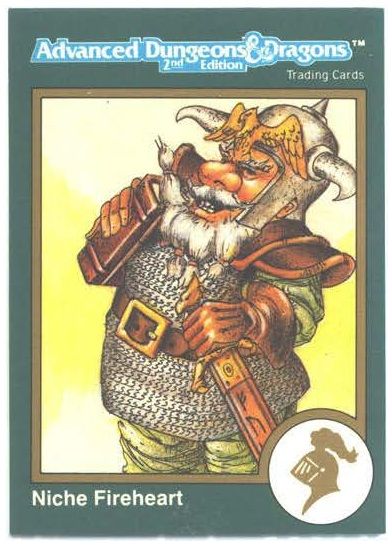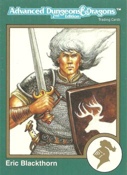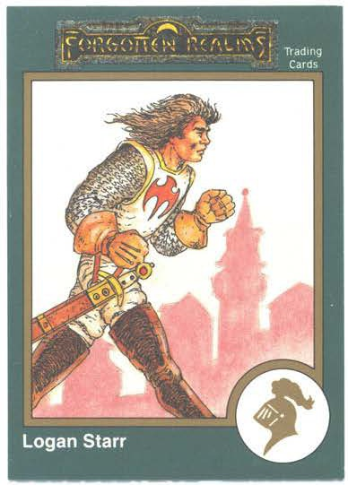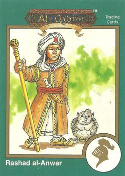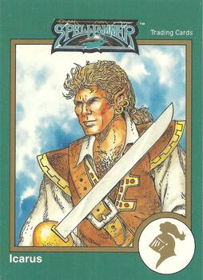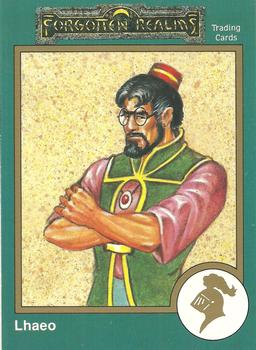